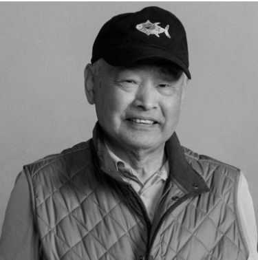
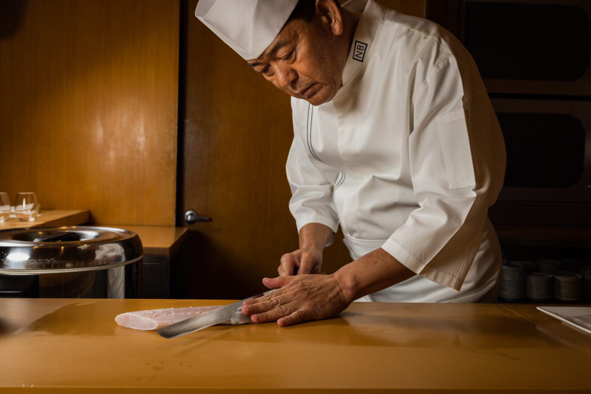

Chef Nozawa
Nozawa draws on his more than 50 years of experience as a legendary master sushi chef to deliver the highest quality sushi at KazuNori, SUGARFISH, and the Nozawa Bar. One of his chief responsibilities is to procuring the highest quality fish, leveraging his long-standing relationships with fishmongers worldwide. “Great sushi starts with great fish.” Nozawa first earned acclaim for his award-winning, namesake restaurant, Sushi Nozawa, where he presided behind the sushi bar for 25 years, serving simple, traditional sushi of the utmost quality.
Chef Fujita
Chef Osamu Fujita, a long-time friend and colleague of Chef Nozawa, presides behind the bar at Nozawa Bar. Fujita was born into a long line of prestigious chefs in Japan, and from an early age, he immersed himself in Japan’s culinary scene, studying with some of the country’s most renowned chefs. As a young man, he brought his talents to US, where he worked for – and became friends with – Master Chef Kazunori Nozawa while working in Los Angeles. After years of working under Nozawa and other master chefs both in the US and Japan, Fujita embarked on a career as an Executive Chef, opening Japanese restaurants in San Diego, Miami, and Las Vegas. During this time, he served as Corporate Executive Japanese Chef, directing the opening of all Japanese restaurants in the U.S. for Hyatt Regency, Executive Chef for the Marssa Restaurant in Las Vegas, and as Corporate Sushi Chef for Loews Hotels. In 2003, Fujita received recognition as a Master Chef from the Japanese Chef Association in Tokyo, and in 2008, he received its Highest Achievement Award.